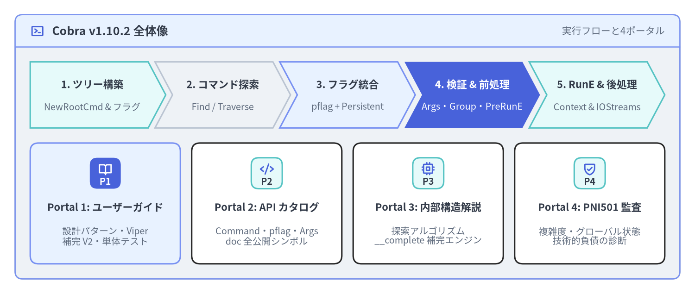
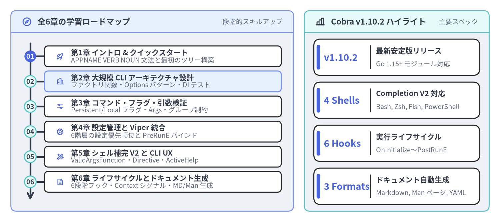

Cobra v1.10.2 — 実践ユーザーガイド
Cobra（github.com/spf13/cobra v1.10.2）は、階層型サブコマンド構造（APPNAME VERB NOUN --ADJECTIVE）と POSIX/GNU 準拠フラグ解析（spf13/pflag）を備えたモダンな Go CLI アプリケーションを構築するためのデファクトスタンダードライブラリです。Kubernetes (kubectl)、GitHub CLI (gh)、Docker CLI、Helm、Hugo など数々のクラウドネイティブ基盤で採用されています。本ガイド（非公式・日英バイリンガル対応）では、最初のサブコマンド構築から、大規模 CLI 向けのファクトリ関数・DI パターン、Viper との6階層設定統合、Shell Completion V2、サブミリ秒で完結するインメモリ単体テストまでを体系的に解説します。

Source Code
from drawlib.canvas import save, setup
from drawlib.icons import phosphor
from drawlib.smartarts import CardList, ChevronProcess, Panel
from drawlib.styles import Styles
setup(width=184, height=78, dpi=150)
outer = Panel(
"Cobra v1.10.2 全体像",
"実行フローと4ポータル",
style=Styles.Neutral.patch(shape_r=2.0),
header_style=Styles.PrimaryNeutral.patch(shape_line_width=1.2),
text_style=Styles.DarkBold.patch(text_size=12.0),
description_style=Styles.Muted.patch(text_size=10.0),
icon=phosphor.terminal_window,
icon_style=Styles.PrimaryBold,
header_variant="filled",
header_height=8.5,
)
outer.draw((4.0, 4.0), width=176.0, height=70.0)
proc = ChevronProcess(
style=Styles.White,
text_style=Styles.DarkBold.patch(text_size=10.5),
description_style=Styles.Muted.patch(text_size=9.5),
corner_angle=62.0,
spacing=1.8,
flat_left_end=True,
)
proc.add("1. ツリー構築", description="NewRootCmd & フラグ", style=Styles.SecondaryNeutral)
proc.add("2. コマンド探索", description="Find / Traverse", style=Styles.Neutral)
proc.add("3. フラグ統合", description="pflag + Persistent", style=Styles.PrimaryNeutral)
proc.add(
"4. 検証 & 前処理",
description="Args・Group・PreRunE",
style=Styles.PrimaryFlat,
text_style=Styles.WhiteBold.patch(text_size=10.5),
description_style=Styles.White.patch(text_size=9.5),
)
proc.add("5. RunE & 後処理", description="Context & IOStreams", style=Styles.SecondaryNeutral)
proc.draw(xy=(8.0, 44.0), width=168.0, height=17.5)
portals = CardList(
style=Styles.White,
text_style=Styles.DarkBold.patch(text_size=10.5),
description_style=Styles.Muted.patch(text_size=9.5),
badge_shape="rounded_rect",
badge_style=Styles.SecondaryNeutral,
badge_text_style=Styles.DarkBold.patch(text_size=9.5),
icon_style=Styles.PrimaryBold,
direction="horizontal",
spacing=3.0,
)
portals.add(
"Portal 1: ユーザーガイド",
"設計パターン・Viper\n補完 V2・単体テスト",
badge_text="P1",
icon=phosphor.book_open,
style=Styles.PrimaryNeutral,
badge_style=Styles.PrimaryFlat,
badge_text_style=Styles.WhiteBold.patch(text_size=9.5),
icon_style=Styles.WhiteBold,
)
portals.add(
"Portal 2: API カタログ",
"Command・pflag・Args\ndoc 全公開シンボル",
badge_text="P2",
icon=phosphor.code,
)
portals.add(
"Portal 3: 内部構造解説",
"探索アルゴリズム\n__complete 補完エンジン",
badge_text="P3",
icon=phosphor.cpu,
)
portals.add(
"Portal 4: PNI501 監査",
"複雑度・グローバル状態\n技術的負債の診断",
badge_text="P4",
icon=phosphor.shield_check,
)
portals.draw(xy=(8.0, 8.0), width=168.0, height=32.0)
save()
1. Cobra v1.10.2 ドキュメントスイート（全4ポータル構成）
本サイトは、spf13/cobra v1.10.2 を徹底解剖する4つの技術ドキュメントポータルのうち Portal 1（実践ユーザーガイド） です。目的に応じて各ポータルを参照してください。
| ポータル | 対象読者とスコープ | 主なトピック | リンク |
|---|---|---|---|
| 1. ユーザーガイド (本サイト) | CLI 開発者・プラットフォームエンジニア | CLI 文法設計、ファクトリ関数/Options DI、pflag 継承、Viper 統合、Shell Completion V2、フック制御 |
cobra.drawlib.com |
| 2. API リファレンス | ライブラリ利用者・SDK 開発者 | cobra / doc / pflag の全公開型・関数シグネチャ、PositionalArgs バリデータ、ShellCompDirective |
cobra.drawlib.com/api/ |
| 3. 内部アーキテクチャ解説 | コアコントリビュータ・フレームワーク設計者 | Command メモリ構造、Find() vs Traverse()、mergePersistentFlags()、__complete 内部プロトコル |
cobra.drawlib.com/architecture/ |
| 4. PNI501 診断レポート | アーキテクト・品質/セキュリティ監査担当 | 循環的複雑度ホットスポット、グローバル変数の並行テストリスク、pflag 結合度分析、v2 改善ロードマップ |
cobra.drawlib.com/reports/pni501/ |
2. 学習ロードマップと全6章ナビゲーション
本ユーザーガイドは、Cobra の基礎文法からエンタープライズ規模のマルチパッケージ CLI 設計までを段階的に習得できる 全6章（計10ページ） で構成されています。

Source Code
from drawlib.canvas import save, setup
from drawlib.icons import phosphor
from drawlib.smartarts import KpiCards, Panel, Roadmap
from drawlib.styles import Styles
setup(width=184, height=82, dpi=150)
left_panel = Panel(
"全6章の学習ロードマップ",
"段階的スキルアップ",
style=Styles.Neutral.patch(shape_r=2.0),
header_style=Styles.PrimaryNeutral.patch(shape_line_width=1.2),
text_style=Styles.DarkBold.patch(text_size=11.5),
description_style=Styles.Muted.patch(text_size=9.5),
icon=phosphor.compass,
icon_style=Styles.PrimaryBold,
header_variant="filled",
header_height=8.0,
)
left_panel.draw((4.0, 4.0), width=104.0, height=74.0)
l_xy, l_w, l_h = left_panel.get_content_box((4.0, 4.0), width=104.0, height=74.0, padding=(3.5, 2.5))
rm = Roadmap(
style=Styles.White,
text_style=Styles.DarkBold.patch(text_size=10.5),
description_style=Styles.Muted.patch(text_size=9.5),
spine_style=Styles.DarkBold,
badge_style=Styles.SecondaryNeutral,
badge_text_style=Styles.DarkBold.patch(text_size=9.5),
icon_style=Styles.PrimaryBold,
direction="vertical",
spacing=1.8,
)
rm.add(
"第1章 イントロ & クイックスタート",
"APPNAME VERB NOUN 文法と最初のツリー構築",
badge_text="01",
icon=phosphor.rocket_launch,
badge_style=Styles.PrimaryFlat,
badge_text_style=Styles.WhiteBold.patch(text_size=9.5),
)
rm.add(
"第2章 大規模 CLI アーキテクチャ設計",
"ファクトリ関数・Options パターン・DI テスト",
badge_text="02",
icon=phosphor.buildings,
style=Styles.PrimaryNeutral,
)
rm.add(
"第3章 コマンド・フラグ・引数検証",
"Persistent/Local フラグ・Args・グループ制約",
badge_text="03",
icon=phosphor.sliders_horizontal,
)
rm.add(
"第4章 設定管理と Viper 統合",
"6階層の設定優先順位と PreRunE バインド",
badge_text="04",
icon=phosphor.gear,
)
rm.add(
"第5章 シェル補完 V2 と CLI UX",
"ValidArgsFunction・Directive・ActiveHelp",
badge_text="05",
icon=phosphor.magic_wand,
)
rm.add(
"第6章 ライフサイクルとドキュメント生成",
"6段階フック・Context シグナル・MD/Man 生成",
badge_text="06",
icon=phosphor.file_text,
)
rm.draw(l_xy, width=l_w, height=l_h)
right_panel = Panel(
"Cobra v1.10.2 ハイライト",
"主要スペック",
style=Styles.Neutral.patch(shape_r=2.0),
header_style=Styles.SecondaryNeutral.patch(shape_line_width=1.2),
text_style=Styles.DarkBold.patch(text_size=11.5),
description_style=Styles.Muted.patch(text_size=9.5),
icon=phosphor.chart_bar,
icon_style=Styles.DarkBold,
header_variant="filled",
header_height=8.0,
)
right_panel.draw((112.0, 4.0), width=68.0, height=74.0)
r_xy, r_w, r_h = right_panel.get_content_box((112.0, 4.0), width=68.0, height=74.0, padding=(3.5, 2.5))
kpi = KpiCards(
style=Styles.White,
metric_style=Styles.PrimaryBold.patch(text_size=13.5),
text_style=Styles.DarkBold.patch(text_size=10.5),
description_style=Styles.Muted.patch(text_size=9.5),
accent_style=Styles.PrimaryFlat,
accent_position="left_pill",
metric_layout="left_column",
metric_width_ratio=0.34,
spacing=2.5,
)
kpi.add("v1.10.2", "最新安定版リリース", "Go 1.15+ モジュール対応")
kpi.add("4 Shells", "Completion V2 対応", "Bash, Zsh, Fish, PowerShell")
kpi.add("6 Hooks", "実行ライフサイクル", "OnInitialize〜PostRunE")
kpi.add("3 Formats", "ドキュメント自動生成", "Markdown, Man ページ, YAML")
kpi.draw(r_xy, width=r_w, height=r_h, columns=1)
save()
全セクション一覧テーブル
| 章 | ガイドページ | 学べる主要コンセプトと実装パターン |
|---|---|---|
| 1. イントロ & クイックスタート | Cobra の設計思想と CLI 哲学 | APPNAME VERB NOUN --ADJECTIVE 文法、標準 flag との比較、Command / Args / Flags の3大プリミティブ |
| 1. イントロ & クイックスタート | クイックスタートとサブコマンド構築 | go get github.com/spf13/cobra@v1.10.2、rootCmd / versionCmd / serveCmd の実装、RunE と AddCommand() |
| 2. 大規模 CLI アーキテクチャ設計 | ファクトリ関数・Options・DI パターン | グローバル変数と init() の弊害、NewCmd*(streams) コンストラクタ、Complete() -> Validate() -> Run() パターン |
| 2. 大規模 CLI アーキテクチャ設計 | マルチパッケージ構成とインメモリテスト | ドメイン分割 cmd/ パッケージ構成、SetOut/SetErr/SetIn/SetArgs と ExecuteC() による高速テーブルテスト |
| 3. コマンド・フラグ・引数検証 | Persistent / Local フラグと継承機構 | PersistentFlags() と Flags()、型付き pflag バインド、TraverseChildren、SetGlobalNormalizationFunc |
| 3. コマンド・フラグ・引数検証 | 位置引数バリデータとフラググループ制約 | ExactArgs/RangeArgs/MatchAll、カスタム検証、MarkFlagsMutuallyExclusive、MarkFlagsRequiredTogether |
| 4. 設定管理と Viper 統合 | 6階層の設定優先順位と Viper バインド | フラグ・環境変数・設定ファイル・デフォルト値を PersistentPreRunE で安全に統合するベストプラクティス |
| 5. シェル補完 V2 と CLI UX | Shell Completion V2 と Directive 制御 | Go 実装による動的補完（ValidArgsFunction、RegisterFlagCompletionFunc）、__complete、ShellCompDirective |
| 5. シェル補完 V2 と CLI UX | ActiveHelp・タイポ提案・ヘルプテンプレート | AppendActiveHelp、レーベンシュタイン距離によるタイポ提案（SuggestFor）、AddGroup、カスタムテンプレート |
| 6. 実行ライフサイクルとドキュメント生成 | 6段階フック・エラー設計・Context シグナル | EnableTraverseRunHooks、SilenceUsage と SilenceErrors、ExecuteContext と signal.NotifyContext 連携 |
| 6. 実行ライフサイクルとドキュメント生成 | ドキュメント自動生成（MD/Man/YAML）と配布 | cobra/doc（GenMarkdownTree、GenManTree、GenYamlTree）、DisableAutoGenTag、CI/CD リリース自動化 |
3. アーキテクチャ早わかり：モダンなコンストラクタ（ファクトリ）パターン
初期のコード生成ツールではパッケージグローバルな var rootCmd = &cobra.Command{...} と func init() が多用されていましたが、現代のクラウドネイティブ Go CLI（kubectl, gh, helm, docker など）では ファクトリ関数（NewRootCmd） で毎回新しいコマンドツリーを生成します。これにより並行テスト（t.Parallel()）での状態汚染を防ぎ、入出力ストリームや依存オブジェクトを安全に注入（DI）できます。
package cli
import (
"io"
"github.com/spf13/cobra"
)
// IOStreams は標準入出力を抽象化し、インメモリ単体テストを容易にします。
type IOStreams struct {
In io.Reader
Out io.Writer
ErrOut io.Writer
}
// NewRootCmd は呼び出しごとに独立したルート Command ツリーを構築して返します。
func NewRootCmd(streams IOStreams, version string) *cobra.Command {
var env string
cmd := &cobra.Command{
Use: "cloudctl",
Short: "クラウドワークロード統合管理 CLI",
Version: version,
SilenceUsage: true, // 実行時ビジネスエラーで長大な Usage を再表示しない
SilenceErrors: true, // エラー出力を main() 側の1箇所に集約する
}
// 注入されたストリームを Command ツリーにバインド
cmd.SetIn(streams.In)
cmd.SetOut(streams.Out)
cmd.SetErr(streams.ErrOut)
// PersistentFlags はすべての子孫サブコマンドに自動継承される
cmd.PersistentFlags().StringVarP(&env, "env", "e", "staging", "デプロイ対象の環境名")
cmd.AddCommand(newStatusCmd(&env))
return cmd
}
func newStatusCmd(env *string) *cobra.Command {
return &cobra.Command{
Use: "status [service]",
Short: "サービスの稼働ステータスを確認",
Args: cobra.MaximumNArgs(1),
RunE: func(cmd *cobra.Command, args []string) error {
target := "all-services"
if len(args) == 1 {
target = args[0]
}
cmd.Printf("環境 %q の %s を確認中...\n", *env, target)
return nil
},
}
}
本ガイドで扱う4大技術領域
- 階層的サブコマンド探索（
Find&Traverse）: 任意の深さのコマンドツリー、エイリアス解決、前方一致（EnablePrefixMatching）、ヘルプ表示時のコマンドグループ分け（AddGroup）。 - POSIX/GNU 準拠フラグ機構（
spf13/pflag）: 短縮フラグ連結（-aux）、--flag=value/--flag value、NoOptDefVal、--によるフラグ解析終了、フラググループ制約（MarkFlagsMutuallyExclusive、MarkFlagsOneRequired、MarkFlagsRequiredTogether）。 - 動的シェル補完 V2（
__complete）: シェルスクリプトではなく Go の関数（ValidArgsFunction）として補完ロジックを記述し、説明付き候補（cobra.CompletionWithDesc）やインラインヒント（cobra.AppendActiveHelp）を Bash / Zsh / Fish / PowerShell 共通で提供。 - 決定論的ライフサイクルとシグナル伝播: 6段階のフック（
OnInitialize,PersistentPreRunE,PreRunE,RunE,PostRunE,PersistentPostRunE,OnFinalize）とExecuteContextによるcontext.Contextキャンセル制御。
次のステップ
まずは Cobra の設計思想と CLI 哲学 で APPNAME VERB NOUN --ADJECTIVE の文法設計と基本構造を学ぶか、クイックスタートとサブコマンド構築 へ進んで最初のマルチコマンド CLI を動かしてみましょう。